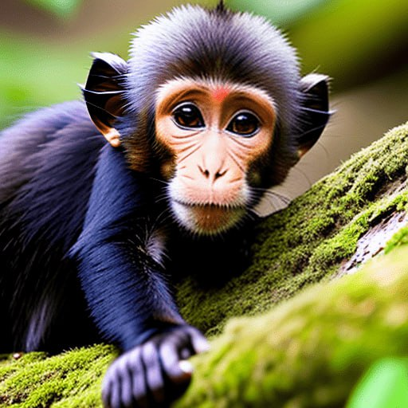

Monkeys have large brains and are known for their inquisi tiveness and intelligence. Brain dev elopment, combined with the freeing of the hands and well-developed vision, allows them a great latitude of activity. Most are good at solving complex problems and learning from experience, but they do not quite reach the cognitive levels of great apes. Some, especially the capuchins (genus Cebus), spontaneously use objects as tools (e.g., stones to crack nuts)
The dog evolved from the gray wolf into more than 400 distinct breeds. Humans beings have played a major role in creating dogs that fulfill distinct societal needs. Through the most rudimentary form of genetic engineering, dogs were bred to accentuate instincts that were evident from their earliest encounters with humans. Although details about the evolution of dogs are uncertain, the first dogs were hunters with keen senses of sight and smell. Humans developed these instincts and created new breeds as need or desire arose.